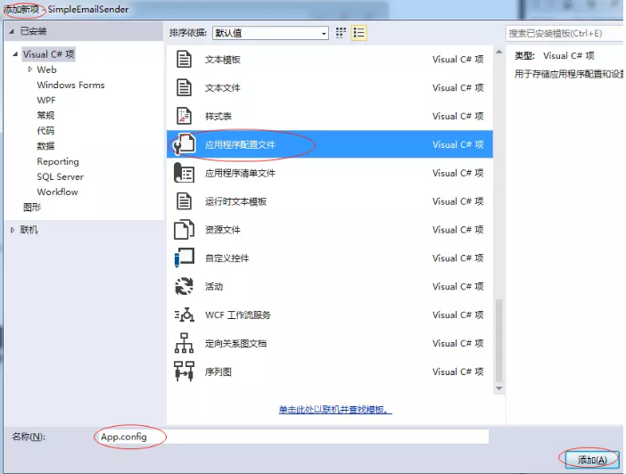
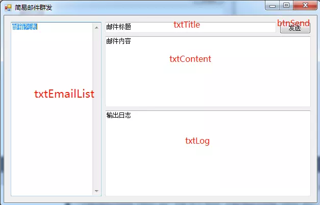
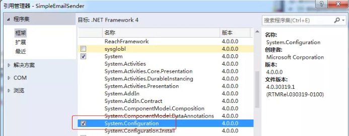
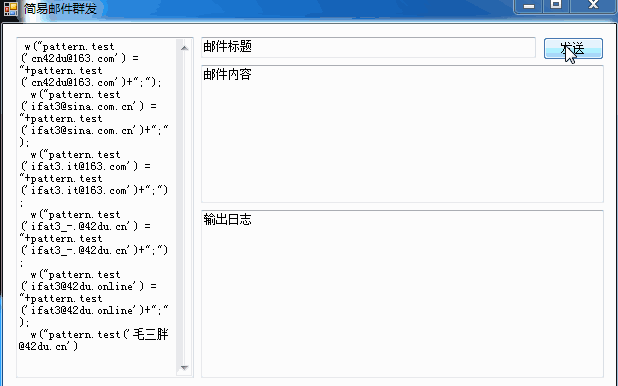
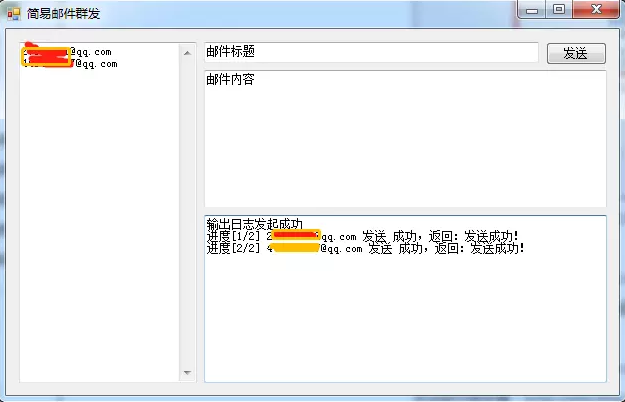

指定一批邮箱地址，使用指定的邮箱发送指定的内容。
.Net 4.0 C# Winform

<configuration>
<appSettings>
<add key="email_stmp" value="smtp.****.com"/>
<add key="send_user_email" value="****@****"/>
<add key="send_user_pass" value="密码"/>
<add key="send_user_disp" value="发件人昵称" />
</appSettings>
</configuration>根据界面接口需求，界面布局如下：

首先完成辅助类开发，最后再跟界面对接完成流程。
因为读取了配置文件，需要添加 System.Configuration 程序集的引用。

定义 MailHelper 辅助类，读取配置参数，向外提供发送邮件功能方法 SendMail。
using System;
using System.Collections.Generic;
using System.Configuration;
using System.Linq;
using System.Net.Mail;
using System.Text;
namespace SimpleEmailSender
{
public class MailHelper
{
public static String EMAIL_USERNAME = ConfigurationManager.AppSettings["send_user_email"];
public static String EMAIL_DISPNAME = ConfigurationManager.AppSettings["send_user_disp"];
public static String EMAIL_PASSWORD = ConfigurationManager.AppSettings["send_user_pass"];
public static String EMAIL_SMTP = ConfigurationManager.AppSettings["email_stmp"];
public static ValidateResult SendMail(string email, string name, string content)
{
return SendMail("系统消息", email, name, content);
}
/// <summary>
/// 发送邮件
/// </summary>
/// <param name="title">邮件标题</param>
/// <param name="email">收件人地址</param>
/// <param name="name">收件人名称</param>
/// <param name="content">邮件内容</param>
public static ValidateResult SendMail(string title, string email, string name, string content)
{
MailAddress from = new MailAddress(EMAIL_USERNAME, EMAIL_DISPNAME); //邮件的发件人
MailMessage mail = new MailMessage();
//设置邮件的标题
mail.Subject = title;
//设置邮件的发件人
//Pass:如果不想显示自己的邮箱地址，这里可以填符合mail格式的任意名称，真正发mail的用户不在这里设定，这个仅仅只做显示用
mail.From = from;
//设置邮件的收件人
mail.To.Add(new MailAddress(email, name));
//设置邮件的内容
mail.Body = content;
//设置邮件的格式
mail.BodyEncoding = System.Text.Encoding.UTF8;
mail.IsBodyHtml = true;
//设置邮件的发送级别
mail.Priority = MailPriority.Normal;
mail.DeliveryNotificationOptions = DeliveryNotificationOptions.OnSuccess;
SmtpClient client = new SmtpClient();
//设置用于 SMTP 事务的主机的名称，填IP地址也可以了
client.Host = EMAIL_SMTP;
//设置用于 SMTP 事务的端口，默认的是 25
client.Port = 25;
client.UseDefaultCredentials = false;
//这里才是真正的邮箱登陆名和密码
client.Credentials = new System.Net.NetworkCredential(EMAIL_USERNAME, EMAIL_PASSWORD);
client.DeliveryMethod = SmtpDeliveryMethod.Network;
//都定义完了，正式发送了，很是简单吧！
ValidateResult vr = new ValidateResult(true, "发送成功！");
try
{
client.Send(mail);
return vr;
}
catch (Exception e)
{
vr.IsValid = false;
vr.Message = e.Message;
return vr;
}
}
}
public class ValidateResult
{
public bool IsValid { get; set; }
public string Message { get; set; }
public ValidateResult() {
}
public ValidateResult(bool v, string m)
{
IsValid = v;
Message = m;
}
}
}
对于邮箱列表，使用正则表达式从文本框中匹配邮箱形成 List
/// <summary>
/// 提取邮件列表
/// </summary>
/// <param name="mails"></param>
/// <returns></returns>
private List<string> ParseEmailList(string mails)
{
List<string> list = new List<string>();
var mc = Regex.Matches(mails, @"\w+([\.-]?\w+)*@\w+([\.-]?\w+)*(\.\w{2,3})+", RegexOptions.IgnoreCase);
foreach (Match c in mc)
{
list.Add(c.Value);
}
return list;
}在日志框中输出内容，为了能在线程中调用，使用了 Invoke 方式执行。
/// <summary>
/// 日志输出支持线程中执行
/// </summary>
/// <param name="message"></param>
private void Log(string message)
{
Invoke(new MethodInvoker(delegate
{
txtLog.AppendText(message + "\r\n");
}));
}基本描述：给定邮箱列表，标题与内容，以线程方式执行发送，给出执行统计与状态。
具体实现：使用线程池，但一组做为一个任务，全部完成才接收下一个任务，通过完成数量与邮箱列表长度的比较来判断是否全部完成，信息通过日志输出的方式查看，形式上通过回调将日志信息传递给调用者。
为此，这里专门定义一个发送器，在应用中，定义一个实例来发起任务。尽管只定义一个实例，但这里并不需要定义为设计模式中的单例模式，事实上，它是可以多实例运行。具体代码说话！
using System;
using System.Collections.Generic;
using System.Linq;
using System.Text;
using System.Threading;
namespace SimpleEmailSender
{
public class EmailSender
{
#region 运行时数据
// 邮箱列表
private List<string> _EmailList = new List<string>();
// 完成数量
private volatile int _OverCount = 0;
// 邮件标题
private string _Title;
// 邮件内容
private string _Content;
// 完成回调（主要是为了写日志）
private Action<string> _Callback;
#endregion
/// <summary>
/// 是否全部完成
/// </summary>
/// <returns></returns>
public bool IsOver()
{
return _OverCount == _EmailList.Count;
}
/// <summary>
/// 发起任务（如果不符合发起条件，则返回 false）
/// </summary>
/// <param name="emails"></param>
/// <param name="title"></param>
/// <param name="content"></param>
/// <param name="callback"></param>
/// <returns></returns>
public bool Send(List<string> emails, string title, string content, Action<string> callback)
{
if (!IsOver())
{
return false;
}
_EmailList = emails;
_OverCount = 0;
_Title = title;
_Content = content;
_Callback = callback;
Start();
return true;
}
/// <summary>
/// 启动任务
///
/// 以线程池方式运行，每个邮箱不论成败完成数加1，并回调通知。
/// </summary>
private void Start()
{
foreach (string email in _EmailList)
{
var _email = email;
ThreadPool.QueueUserWorkItem(t =>
{
var vr = MailHelper.SendMail(_Title, _email, "", _Content);
_OverCount++;
_Callback(String.Format("进度[{3}/{4}] {0} 发送 {1}，返回：{2}", _email, vr.IsValid ? "成功" : "失败", vr.Message, _OverCount, _EmailList.Count));
});
}
}
}
}
发送按钮执行的流程为：如果之前的任务尚未完成，则等待。否则，首先提取邮箱列表，并格式化显示，然后发起任务，观察日志即可。
private EmailSender _Sender = new EmailSender();
// 发送按钮
private void btnSend_Click(object sender, EventArgs e)
{
if (!_Sender.IsOver())
{
Log("之前的任务尚未完成，请等待完成！");
return;
}
// 1. 提取邮件列表并格式化显示
string mails = txtEmailList.Text.Trim();
var list = ParseEmailList(mails);
// 2. 格式化显示一下
txtEmailList.Clear();
foreach (var mail in list)
{
txtEmailList.AppendText(mail + "\r\n");
}
// 3. 发起任务
var b = _Sender.Send(list, txtTitle.Text.Trim(), txtContent.Text, Log);
Log(b ? "发起成功" : "发起失败");
}
